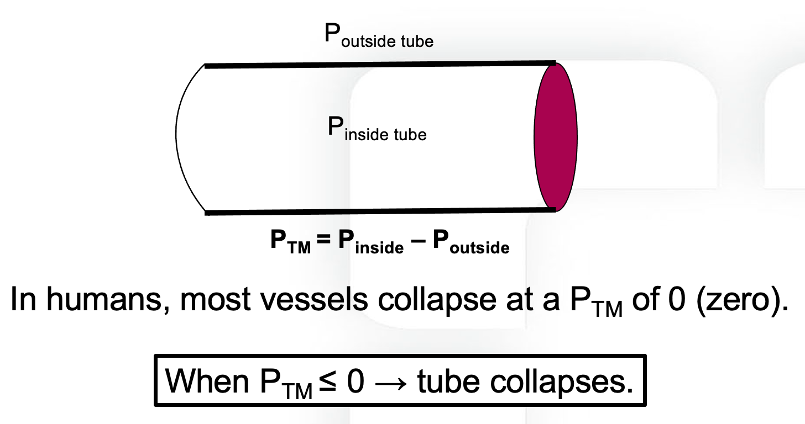
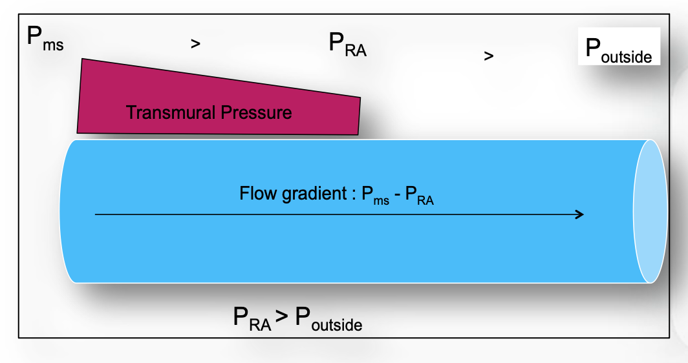
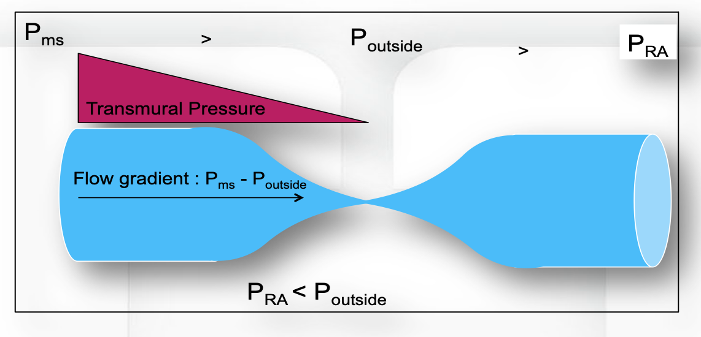

Module I8
Venous return, in depth
Module N4 (opens in a new tab) built the venous side of the circulation from the reservoir up: unstressed volume that fills vessels without distending them, stressed volume that does distend them, the mean systemic filling pressure (Pms) that the stretch generates, and the curve relating flow back to the heart to the pressure that flow has to enter. It left three questions open on purpose.
The first is why the venous return curve stops rising. N4 named the plateau, called it a vascular waterfall, and deferred the mechanism. The second is where the resistance in the denominator physically sits, and why the answer is more interesting than "the veins." The third is the hardest. N4 treated RAP as a term you can move, but RAP is also the pressure the whole system settles at, which means the same number is an input to one curve and an output of the system as a whole. Reconciling those two readings is what separates a clinician who can recite the venous return equation from one who can use it.
This module takes the three in order and then turns them back on the decisions they govern: what a fluid bolus is actually doing, what a vasopressor is actually doing, and what a central venous pressure reading is entitled to tell you.
What the venous return curve measures, and what it does not
Arthur Guyton's contribution in the 1950s was twofold. He established experimentally that the mean circulatory filling pressure, together with the peripheral factors that govern drainage, sets cardiac output, and he formalized the practice of equating a venous return curve with a cardiac response curve to find the single flow and pressure at which the circulation operates. Both papers are worth knowing by name because the second one is the origin of the two-curve diagram that every subsequent textbook redraws.
The plot has a feature that causes lasting confusion. RAP sits on the x axis, in the position conventionally reserved for the independent variable, but in an intact circulation RAP is not independent of anything. Berlin and Bakker put it plainly in their 2015 review of how the two traditions arrived at this diagram: even though Guyton placed right atrial pressure on the x axis, it is not an independent variable that determines cardiac output. RAP is a surrogate for the return of blood to the heart only under a defined set of circumstances, and those circumstances are not reliably present at the bedside.
What the curve does describe is the behavior of the vasculature when the downstream pressure is varied and everything else is held still. Read that way it is a statement about the venous circulation's capacity to deliver, not a trajectory the heart travels along. The heart's contribution is to set where on that curve the system lands, by lowering RAP as it pumps. Nothing the heart does moves the curve itself.
Two numbers make the reservoir concrete in a way N4 did not need to. Magder and De Varennes measured stressed volume directly in five patients undergoing hypothermic circulatory arrest, by draining the patient into the bypass reservoir once the pump was stopped, and found 20.2 (S.D. +/- 1.0 mL/kg), about 30 percent of predicted blood volume. In a 5.5 L circulation with minimal sympathetic tone, roughly 1.3 to 1.4 L of blood is doing the work of stretching vessel walls and generating recoil. The other 4 L is holding the container open. That ratio is the whole reason venoconstriction is a hemodynamic intervention rather than a curiosity: there is a very large recruitable reserve sitting in the unstressed compartment.
The second number corrects an expectation. N4 gave Pms as roughly 8 to 10 mmHg, which is the healthy, normally toned, spontaneously breathing value. Measured in critically ill patients it is considerably higher. Maas and colleagues, using inspiratory hold maneuvers in mechanically ventilated postoperative cardiac surgery patients, found a mean Pms of 20.9 (S.D. +/- 5.6 mmHg). In septic shock patients on norepinephrine, Persichini and colleagues estimated Pms at 33 (S.D. +/- 12 mmHg). Positive pressure, vasopressor tone, and resuscitation volume all push it up, and a clinician expecting a single digit will misjudge how much gradient is available.
Flow limitation and the vascular waterfall
The plateau on the venous return curve is not a biological compromise or a reflex. It is a mechanical consequence of the fact that veins are collapsible tubes, and it follows from one quantity.

Now follow what happens as RAP falls. While RAP remains above the pressure surrounding the great veins, transmural pressure is positive everywhere along the tube, the vessel stays open, and the driving pressure for return is the familiar Pms minus RAP. Lowering RAP widens that gradient and flow rises, which is the sloped portion of the curve.
Lower RAP below the surrounding pressure and something qualitatively different happens. At the point where the intravascular pressure falls to the surrounding pressure, transmural pressure reaches zero and the vessel collapses. Flow through that segment stops, pressure immediately upstream rises back toward the surrounding value, and the vessel reopens, so the segment settles into a state in which the effective downstream pressure for everything upstream of it is pinned at Poutside. It cannot go lower, no matter what RAP does.


This is the vascular waterfall, described formally by Permutt and Riley in 1963 as the hemodynamics of collapsible vessels with tone. The name is a good one. Water falling from a ledge into a pool does not flow faster because the pool is deepened. The height of the ledge, not the depth below it, sets the flow. The circulatory version gives a hard ceiling on return:

Three implications follow, and they are worth stating separately because each one overturns a piece of common bedside reasoning.
The heart cannot pull. Cardiac output is capped by VRmax regardless of contractility. An inotrope that empties the right ventricle more completely, or a heart rate increase that shortens the time available for filling, cannot raise flow past a ceiling that is set entirely in the venous circulation. When a patient's cardiac output does not respond to inotropy, flow limitation is one of the mechanisms worth having in mind, alongside the more familiar ones.
Very negative pleural pressure is not free preload. A large spontaneous inspiratory effort lowers RAP, and up to a point this recruits flow. Past the collapse point it does not, because the abdominal segment of the inferior vena cava has already reached its limit. The extra effort buys nothing on the venous side while continuing to load the left ventricle.
Flow limitation is where PEEP does its damage. More on this below, but the position of the limit is not fixed. Under positive pressure ventilation the collapse point moves to a positive RAP rather than sitting near zero, which shortens the sloped portion of the curve available to the patient.
Where the collapse point sits
In a spontaneously breathing person the flow-limiting segment is at the thoraco-abdominal junction, where the great veins cross from the abdomen into the chest. The relevant surrounding pressure there is abdominal pressure, which at end expiration is close to zero relative to atmosphere, so flow limitation appears at an RAP slightly below zero. That is why the normal operating point in health sits just to the right of the inflection, with a small reserve of gradient in hand and none of it wasted.
The abdomen is not a passive bystander
The waterfall model as usually taught treats abdominal pressure as a fixed downstream constraint that can only do harm. Takata, Wise and Robotham showed in 1990 that this is half the story. Borrowing the logic of pulmonary vascular zone conditions, they analyzed the abdominal venous compartment as having zones of its own, and tested the model in twelve canine experiments with an open-chest inferior vena cava bypass.
The prediction, which the experiments confirmed, is that raising abdominal pressure increases inferior vena caval return when the caval pressure at the diaphragm exceeds abdominal pressure, which is zone 3, and decreases it when caval pressure sits below abdominal pressure, which is zone 2. The value of caval pressure minus abdominal pressure separating the two behaviors was 1.00 (S.D. +/- 0.72 mmHg). Under zone 3 the abdominal venous compartment acts as a capacitor whose contents are squeezed toward the heart when abdominal pressure rises. Under zone 2 it acts as a collapsible Starling resistor with almost no wall tone, and the same rise in abdominal pressure simply raises the waterfall.
This single result explains several bedside observations that otherwise look contradictory. It explains why a passive leg raise recruits volume in some patients and does nothing in others. It explains why abdominal compression can be a transient rescue in one patient and a hemodynamic insult in the next. And it explains why intra-abdominal hypertension is not uniformly bad for venous return, which is a counterintuitive point worth holding onto: the harm depends on which side of the zone boundary the patient sits.
Guérin and colleagues took the human measurement in 2015. In thirty patients with acute circulatory failure they constructed venous return curves from paired cardiac index and central venous pressure values obtained during end-inspiratory and end-expiratory occlusions at two levels of PEEP. Passive leg raising raised Pms without changing the resistance to venous return, and it did so even in the subgroup with intra-abdominal hypertension, in whom Pms rose from 22 (S.D. +/- 11 mmHg) to 27 (S.D. +/- 10 mmHg) with no change in resistance. The discriminating finding is what happened to the gradient rather than to Pms. In fluid responders the Pms minus CVP gradient rose by 20 (S.D. +/- 30 percent). In non-responders, Pms rose just as it did in responders, but CVP rose with it and the gradient did not change. A passive leg raise that fails is not a leg raise that recruited no volume. It is one whose recruited volume was absorbed by a right heart that could not accept it.
Resistance to venous return, and where it actually lives
The anatomic answer
The Hagen-Poiseuille intuition points at radius, and radius to the fourth power dominates everything else in the expression. The counterintuitive consequence is that the venules and small veins, which hold the great majority of the blood, contribute almost nothing to resistance, because their combined cross-sectional area is enormous. Resistance concentrates instead in the vessels with the smallest total cross-section, which are the venae cavae and the large intrathoracic veins.
That localization is clinically useful because it tells you which lesions matter. Anything that narrows the cavae raises the resistance to venous return sharply and flattens the slope of the curve: intra-abdominal hypertension compressing the inferior vena cava, superior vena cava syndrome, central venous thrombosis, a mediastinal mass, tense ascites, a gravid uterus. In each case decompression is a hemodynamic intervention and not merely a symptomatic one.
The functional answer, which is the deeper one
The Rv in the venous return equation is not the anatomic resistance of the veins. It is a composite, weighted by compliance, across parallel vascular beds that drain at very different rates, and it can change without any vessel changing caliber.
The systemic circulation drains through beds with markedly different time constants. Permutt's group established, and Magder summarizes, that the splanchnic vasculature has a drainage time constant in the range of 20 to 24 seconds while the peripheral beds drain with a time constant of 4 to 6 seconds. The splanchnic bed is slow because it is highly compliant, not because its outflow vessels are narrow. Since a time constant is the product of resistance and compliance, a bed can be slow to empty by virtue of holding a great deal of volume at low pressure.
Now consider what happens when the fraction of cardiac output directed to each bed changes. Sending a larger share of flow to the low-compliance, fast-draining periphery lowers the effective resistance to venous return without altering Pms at all. The venous return curve steepens with no change in its intercept. What matters is the fraction of total output going to each region rather than the absolute flow, because total blood volume is fixed.
This is why the composite matters clinically. The compliance of small venules and veins is roughly forty times that of the arterial vessels and the large veins, and the systemic veins and venules hold over 70 percent of total blood volume at low pressure. A drug that redistributes arterial flow away from the splanchnic bed is changing the resistance to venous return by changing the weighting, and a measured change in "venous resistance" on a bedside venous return curve does not license a conclusion about any particular vessel.
Positive pressure ventilation, the case that separates the two answers
The standard teaching is that positive pressure reduces venous return by raising RAP and narrowing the Pms minus RAP gradient. Two experiments show that this explanation is incomplete in an instructive way.
Fessler and colleagues applied 15 cm H2O PEEP in an intact canine preparation and measured Pms as the equilibrium RAP during ventricular fibrillation. Under control conditions PEEP raised Pms and RAP by essentially the same amount, so the gradient for venous return was preserved, and yet cardiac output fell. The rise in Pms proved to be largely reflex: carotid sinus and vagal denervation attenuated it by 17 percent, and total spinal anesthesia with arterial pressure restored by epinephrine attenuated it by 49 percent. Binding or widely opening the abdomen did not alter the rise in Pms with reflexes intact. The gradient fell only in two circumstances, when the abdomen was bound and RAP therefore rose disproportionately, or during sympathetic blockade when the reflex rise in Pms failed to occur.
The mechanism turned up in the same group's 1992 study, which used a closed-chest canine venous bypass to characterize the pressure-flow curves from the superior and inferior vena cava separately. Ten mmHg of PEEP raised the critical downstream pressure below which venous return is maximal from about minus 0.3 to plus 3.2 mmHg in the superior vena cava and from about minus 0.4 to plus 5.2 mmHg in the inferior vena cava, and reduced conductance in the superior vena cava. In other words PEEP reduced venous return by moving the waterfall, even when the outflow pressures were held below zero. The effect was on the peripheral circulation, independent of anything happening to the heart.
Vieillard-Baron and colleagues then found the human correlate. Measuring superior vena caval diameter beat by beat on transesophageal echocardiography in 22 mechanically ventilated patients, they found 15 patients with a low collapsibility index of 17 (S.D. +/- 7 percent) and a modest inspiratory fall in right ventricular outflow of 25 (S.D. +/- 17 percent). In seven patients the collapsibility index was 71 (S.D. +/- 7 percent) and the inspiratory fall in right ventricular outflow was 69 (S.D. +/- 14 percent), with a shortened pulmonary artery flow period. Rapid volume expansion in that group reduced collapsibility to 15 (S.D. +/- 12 percent) and halved the inspiratory fall in outflow to 31 (S.D. +/- 20 percent). This is zone 2 physiology in the thoracic vena cava, produced by insufficient filling and corrected by filling.
The two studies together give the correct statement: positive pressure reduces venous return chiefly by inducing flow limitation in the great veins, not by consuming the pressure gradient, and the sympathetic reflex rise in Pms is what normally protects the gradient. That last clause is the one with therapeutic content, because deep sedation removes it. The full account of what a breath does to both ventricles belongs to the heart-lung modules. What belongs here is the venous half: the ventilator moves the waterfall.
| Mechanism | What it changes on the curve | Effect on venous return |
|---|---|---|
| Fluid bolus, venoconstriction | Intercept moves right (Pms rises) | Higher flow at any RAP |
| Caval compression, thrombus, mass | Slope flattens (Rv rises) | Less flow per unit of gradient |
| Flow redistributed to fast-draining beds | Slope steepens, intercept unchanged | Higher flow with no volume added |
| PEEP, auto-PEEP | Plateau shifts to a positive RAP | Ceiling reached at a higher RAP |
| Raised abdominal pressure, zone 3 | Effective intercept moves right | Caval volume squeezed toward the heart |
| Raised abdominal pressure, zone 2 | Plateau shifts to a higher Poutside | Ceiling lowered |
Manipulating Pms deliberately
There are only two levers, volume and tone, and N4 named both. What Core practice adds is a sense of how much each one moves and what the movement costs.
Volume. Only the stressed fraction of an infused bolus raises Pms, and in a normally toned circulation that fraction is around a quarter to a third. Maas and colleagues measured the effect directly in ten ventilated postoperative cardiac surgery patients: 0.5 L of colloid raised Pms from 18.7 (S.D. +/- 4.0 mmHg) to 26.3 (S.D. +/- 3.2 mmHg) and cardiac output from 5.5 (S.D. +/- 1.8 L/min) to 6.8 (S.D. +/- 1.8 L/min). Worth doing the arithmetic on that: a rise of roughly 7.6 mmHg for 500 mL implies an effective systemic compliance of about 65 mL per mmHg in those patients. The same bolus in a vasodilated septic patient distributes very differently, because a more compliant reservoir absorbs more of the infusion as unstressed volume and the Pms rise is correspondingly smaller. The clinical corollary is that the response to a bolus reports on venous compliance as much as on cardiac function, which is one reason the same 500 mL produces very different answers in two patients with identical filling pressures.
Tone. Persichini and colleagues answered the question the other way round, by taking norepinephrine away. In sixteen patients with septic shock, reducing the dose from 0.30 to 0.19 micrograms/kg/min lowered Pms from 33 (S.D. +/- 12 mmHg) to 26 (S.D. +/- 10 mmHg). Resistance to venous return also fell, which by itself would have helped, but it fell by less than Pms did, so venous return fell on balance and cardiac index dropped from 3.47 (S.D. +/- 0.86 L/min/m2) to 3.28 (S.D. +/- 0.76 L/min/m2). The elegant part of the study is the passive leg raise performed at each dose. At the higher norepinephrine dose the leg raise raised cardiac index by 1 (S.D. +/- 4 percent). At the lower dose it raised it by 8 (S.D. +/- 4 percent), which means the lower dose had returned volume to the unstressed compartment where a leg raise could find it.
The two levers interact, and the interaction runs in the direction that matters when both are being used at once. Adda and colleagues, from the same group, asked whether the norepinephrine dose changes what a given volume of fluid achieves. The reasoning is geometric. Venoconstriction shrinks the venous compartment that a bolus has to fill, so the same volume should raise the pressure in a constricted reservoir by more than it raises the pressure in a relaxed one, and the effects of the drug and of the fluid should be more than additive. In thirty ventilated septic shock patients they used a passive leg raise as a reproducible, reversible stand-in for a bolus, estimating Pms by the inspiratory hold method described below, first at the running norepinephrine dose and again after a single-step reduction to the prescribed arterial pressure target. Weaning the dose from 0.32 [IQR 0.18-0.62] to 0.26 [IQR 0.13-0.50] micrograms/kg/min lowered Pms from 30.7 (S.D. +/- 10.3 mmHg) to 27.7 (S.D. +/- 9.7 mmHg), a fall of 9 [IQR 4-19] percent, and cardiac index fell by 11 [IQR 3-16] percent. That is the Persichini result reproduced. The new finding is what the leg raise did at each dose. At the higher dose it raised Pms by 13 [IQR 9-19] percent, to 35.6 (S.D. +/- 11.2 mmHg). At the lower dose it raised Pms by 11 [IQR 6-16] percent, to 30.5 (S.D. +/- 10.4 mmHg). Adding the three separate effects together, the low-dose baseline, the increment from restoring the dose and the increment from a low-dose leg raise, predicts a high-dose leg raise value of 33.6 (S.D. +/- 10.9 mmHg). The measured value of 35.6 exceeded it, and the resistance to venous return did not change with the leg raise at either dose, so the surplus is best read as an effect on the reservoir rather than on drainage. The margin is modest in absolute terms, but the direction is what carries the lesson: norepinephrine makes the same volume of fluid count for more.
The count of preload responders moved the other way, from 8 patients (27 percent) at the higher dose to 15 (50 percent) at the lower, and the leg raise raised cardiac index by 6 [IQR 2-10] percent at the higher dose against 10 [IQR 7-15] percent at the lower. The two results are the same physiology read from opposite ends. Less venoconstriction leaves more of the blood volume in the unstressed compartment where a leg raise can recruit it, so the flow response to a preload challenge grows as the dose falls. More venoconstriction leaves the reservoir already partly filled, so a given increment of volume produces a larger rise in Pms. A bolus given during a vasopressor wean is therefore a bolus given into a reservoir that is being enlarged in real time, and it will raise Pms by less than the same volume would have done at the higher dose.
Read forward, this is the physiological case for norepinephrine as a venous drug: it raises Pms, it raises the resistance to venous return, the first effect is the larger, so net venous return improves, and it makes each unit of fluid given alongside it raise Pms by more. It is also a warning about weaning. A patient whose vasopressor dose is being reduced is having stressed volume converted back to unstressed volume in real time, and the fall in cardiac output that follows is a filling problem, not a new cardiac event.
Measuring Pms at the bedside
Pms stopped being a purely experimental quantity some time ago. Three approaches have been validated against each other in ventilated patients. The first constructs a venous return curve from paired cardiac output and central venous pressure values obtained during a series of inspiratory hold maneuvers at different airway pressures, and extrapolates to the zero-flow intercept. The second inflates a cuff around the upper arm to create stop-flow and reads the equilibrium pressure in the arm, Parm. The third computes a model analogue, Pmsa, from a Guytonian model of the systemic circulation using routinely measured variables.
Maas and colleagues compared all three in eleven postoperative cardiac surgery patients across supine, head-up tilt and post-fluid-loading states. Parm and the inspiratory hold estimate agreed closely, with a non-significant bias of minus 1.0 (S.D. +/- 3.08 mmHg) and limits of agreement from minus 7.3 to 5.2 mmHg. The model analogue was biased low by 6.0 (S.D. +/- 3.1 mmHg) but tracked the direction of change correctly. The practical reading is that absolute agreement between methods is imperfect and that all three follow the direction of a change in effective circulating volume, which is usually the question being asked.
RAP, from Starling to Guyton to the bedside
The two great traditions in this field put the same variable on the same axis and meant different things by it. Reconciling them is not a historical exercise. It determines what you are allowed to conclude from a central venous pressure reading.
In Starling's preparation, RAP was preload. The chest was open, the heart was surrounded by atmospheric pressure, and venous inflow was set by the height of an external reservoir. Under those conditions the measured intracavitary pressure was also the transmural pressure, which is the pressure that distends the ventricle and stretches the myocytes. Nothing else could confound it, because there was no pleural pressure and no meaningful pericardial constraint. RAP was a faithful surrogate for end-diastolic fibre length, and the ascending limb of the cardiac function curve is a real, causal relationship in that setting.
In Guyton's framing, RAP is a backpressure. It is the downstream pressure that the venous reservoir has to empty into, and raising it reduces venous return. Here RAP is not a measure of stretch at all, and the relevant quantity is intravascular pressure referenced to the pressure surrounding the great veins.
Both are correct, and the reason they can be simultaneously correct is that they concern different pressures that happen to be measured by the same catheter. Preload is transmural, which means intracavitary pressure minus the pressure outside the heart. Backpressure to venous return is intravascular, and it matters only relative to the pressure surrounding the collapsible segment. The catheter reports intravascular pressure referenced to atmosphere and does not distinguish between the two roles.
That distinction disposes of the apparent paradox in the two curves, where a rising RAP raises flow on one and lowers it on the other. It also dissolves the long-running argument about whether central venous pressure is useful. As Magder puts it in his 2017 review of RAP measurement in the critically ill, RAP is determined by the interaction of cardiac function with return function, so it gives insight into the mechanism behind a hemodynamic change, into responses to interventions, and into the likelihood of particular diagnoses. What it cannot do is stand alone as a volume status number, because a single value is consistent with several distinct states.
| A high RAP caused by | Transmural, so true preload | Effect on venous return | What actually helps |
|---|---|---|---|
| Volume loading | High | Reduced, but Pms rose more | Stop when the gradient stops improving |
| RV failure or a stiff RV | High or normal | Reduced with no rise in Pms | Unload the RV, do not fill it |
| Tamponade or pericardial constraint | Low | Reduced | Drain, and fill only as a bridge |
| Raised pleural pressure (PEEP, auto-PEEP) | Low | Reduced, and the plateau has moved right | Reduce airway pressure, restore tone |
| Raised abdominal pressure | Variable | Depends on abdominal zone condition | Decompress if zone 2 |
The middle column is the one that changes management. In tamponade and in high airway pressures the measured RAP is high while the transmural pressure, and therefore the true preload, is low. A clinician reading the raw number withholds fluid from exactly the patients whose ventricles are underfilled. In right ventricular failure the number and the preload are both high and further filling is genuinely harmful. The same reading, opposite actions, distinguished only by the pressure outside the heart.
The part that is still argued
It is worth knowing that the framework has serious critics, because a learner who meets the objection secondhand may over-correct. Magder and Brengelmann exchanged a formal Point and Counterpoint in 2006 on whether the classical Guyton view, that Pms, RAP and venous resistance govern venous return, is correct. Brengelmann has continued to argue the case since, holding that Pms does not drive venous return in the causal sense the equation implies and that the formulation gets the right answer for the wrong reason. Magder has defended the classical account.
The dispute is about causal interpretation rather than about the measurements. Nothing in it disturbs the clinically load-bearing content: stressed volume and venous compliance set the upstream pressure, the great veins carry most of the resistance, collapse at the thoraco-abdominal junction imposes a ceiling on flow, and the pressure you measure in the right atrium is the outcome of an interaction rather than a setting you dial in. Hold the model as an accounting framework that reliably predicts the direction of change, and it will not mislead you.
What this changes about the two curves
The venous return curve as N4 drew it now has a mechanism behind each of its three features. The intercept is stressed volume divided by systemic compliance, and it is the only part of the curve that fluid and vasopressors move. The slope is a compliance-weighted composite that can change through redistribution of flow as readily as through a change in vessel caliber, and most of the anatomic contribution sits in the venae cavae rather than in the veins that hold the blood. The plateau is a waterfall at the thoraco-abdominal junction whose height is set by the pressure surrounding the vessels, which is why the ventilator, the abdomen and the diaphragm all get a say in the maximum cardiac output a patient can achieve.
The next question is what happens where the two curves meet, and how a single intervention that moves both of them produces the small change in RAP and the large change in flow that we keep observing. The venous half of what a breath does has been told here. The rest of that account, the effect of a breath on both ventricles at once, is taken up in Module I12 (opens in a new tab).
References
- Guyton AC, Lindsey AW, Kaufmann BN. Effect of mean circulatory filling pressure and other peripheral circulatory factors on cardiac output. Am J Physiol. 1955;180(3):463-468. doi:10.1152/ajplegacy.1955.180.3.463.
- Guyton AC. Determination of cardiac output by equating venous return curves with cardiac response curves. Physiol Rev. 1955;35(1):123-129. doi:10.1152/physrev.1955.35.1.123.
- Permutt S, Riley RL. Hemodynamics of collapsible vessels with tone: the vascular waterfall. J Appl Physiol. 1963;18:924-932. doi:10.1152/jappl.1963.18.5.924.
- Takata M, Wise RA, Robotham JL. Effects of abdominal pressure on venous return: abdominal vascular zone conditions. J Appl Physiol (1985). 1990;69(6):1961-1972. doi:10.1152/jappl.1990.69.6.1961.
- Fessler HE, Brower RG, Wise RA, Permutt S. Effects of positive end-expiratory pressure on the gradient for venous return. Am Rev Respir Dis. 1991;143(1):19-24. doi:10.1164/ajrccm/143.1.19.
- Fessler HE, Brower RG, Wise RA, Permutt S. Effects of positive end-expiratory pressure on the canine venous return curve. Am Rev Respir Dis. 1992;146(1):4-10. doi:10.1164/ajrccm/146.1.4.
- Vieillard-Baron A, Augarde R, Prin S, Page B, Beauchet A, Jardin F. Influence of superior vena caval zone condition on cyclic changes in right ventricular outflow during respiratory support. Anesthesiology. 2001;95(5):1083-1088. doi:10.1097/00000542-200111000-00010.
- Magder S, De Varennes B. Clinical death and the measurement of stressed vascular volume. Crit Care Med. 1998;26(6):1061-1064. doi:10.1097/00003246-199806000-00028.
- Magder S. Volume and its relationship to cardiac output and venous return. Crit Care. 2016;20(1):271. doi:10.1186/s13054-016-1438-7. Free full text.
- Maas JJ, Pinsky MR, Geerts BF, de Wilde RB, Jansen JR. Estimation of mean systemic filling pressure in postoperative cardiac surgery patients with three methods. Intensive Care Med. 2012;38(9):1452-1460. doi:10.1007/s00134-012-2586-0. Free full text.
- Maas JJ, de Wilde RB, Aarts LP, Pinsky MR, Jansen JR. Determination of vascular waterfall phenomenon by bedside measurement of mean systemic filling pressure and critical closing pressure in the intensive care unit. Anesth Analg. 2012;114(4):803-810. doi:10.1213/ANE.0b013e318247fa44. Free full text.
- Persichini R, Silva S, Teboul JL, Jozwiak M, Chemla D, Richard C, Monnet X. Effects of norepinephrine on mean systemic pressure and venous return in human septic shock. Crit Care Med. 2012;40(12):3146-3153. doi:10.1097/CCM.0b013e318260c6c3.
- Adda I, Lai C, Teboul JL, Guerin L, Gavelli F, Monnet X. Norepinephrine potentiates the efficacy of volume expansion on mean systemic pressure in septic shock. Crit Care. 2021;25(1):302. doi:10.1186/s13054-021-03711-5. Free full text.
- Guérin L, Teboul JL, Persichini R, Dres M, Richard C, Monnet X. Effects of passive leg raising and volume expansion on mean systemic pressure and venous return in shock in humans. Crit Care. 2015;19:411. doi:10.1186/s13054-015-1115-2. Free full text.
- Hamzaoui O, Jozwiak M, Geffriaud T, Sztrymf B, Prat D, Jacobs F, Monnet X, Trouiller P, Richard C, Teboul JL. Norepinephrine exerts an inotropic effect during the early phase of human septic shock. Br J Anaesth. 2018;120(3):517-524. doi:10.1016/j.bja.2017.11.065.
- Berlin DA, Bakker J. Starling curves and central venous pressure. Crit Care. 2015;19(1):55. doi:10.1186/s13054-015-0776-1. Free full text.
- Magder S. Right atrial pressure in the critically ill: how to measure, what is the value, what are the limitations? Chest. 2017;151(4):908-916. doi:10.1016/j.chest.2016.10.026.
- Magder S. Point: the classical Guyton view that mean systemic pressure, right atrial pressure, and venous resistance govern venous return is/is not correct. J Appl Physiol (1985). 2006;101(5):1523-1525. doi:10.1152/japplphysiol.00698.2006.
- Brengelmann GL. Counterpoint: the classical Guyton view that mean systemic pressure, right atrial pressure, and venous resistance govern venous return is not correct. J Appl Physiol (1985). 2006;101(5):1525-1526. doi:10.1152/japplphysiol.00698a.2006.
- Brengelmann GL. Venous return, mean systemic pressure and getting the right answer for the wrong reason. Ann Transl Med. 2019;7(8):185. doi:10.21037/atm.2019.03.64. Free full text.